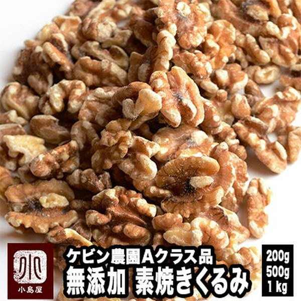
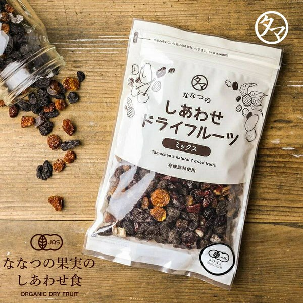
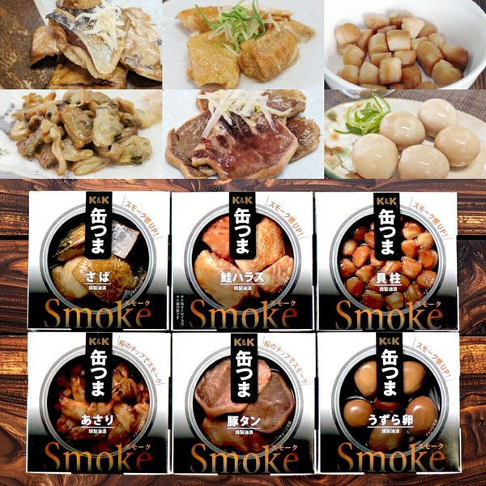
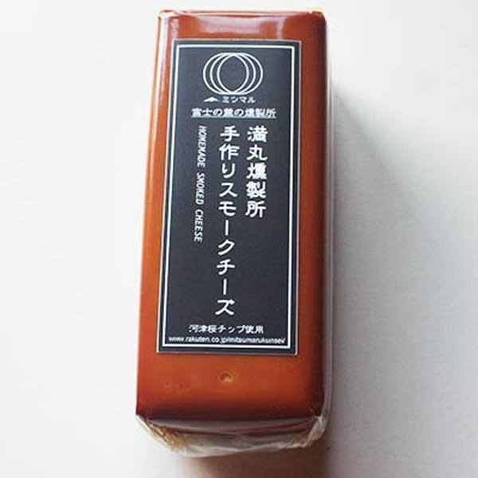
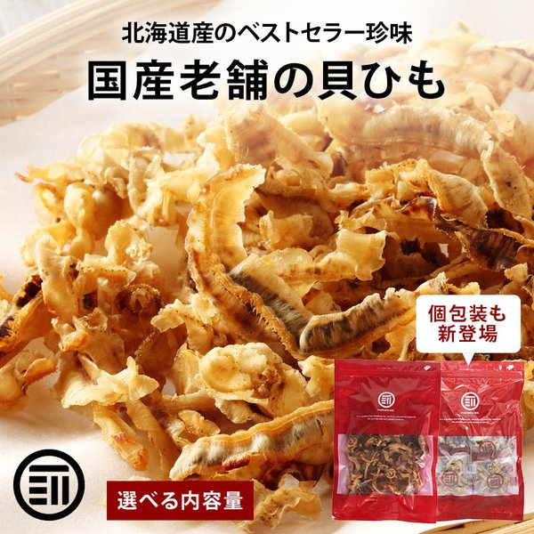
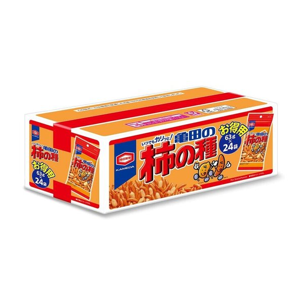
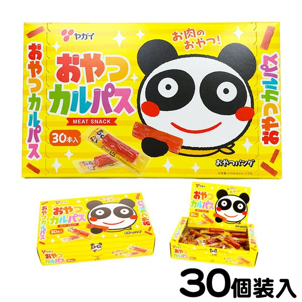
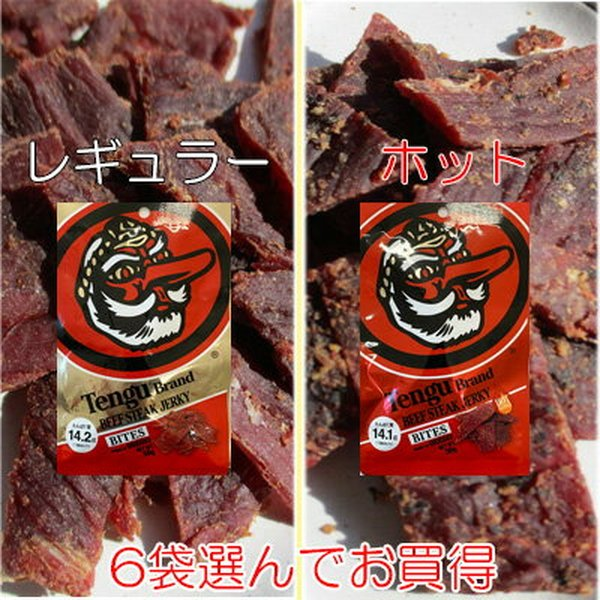
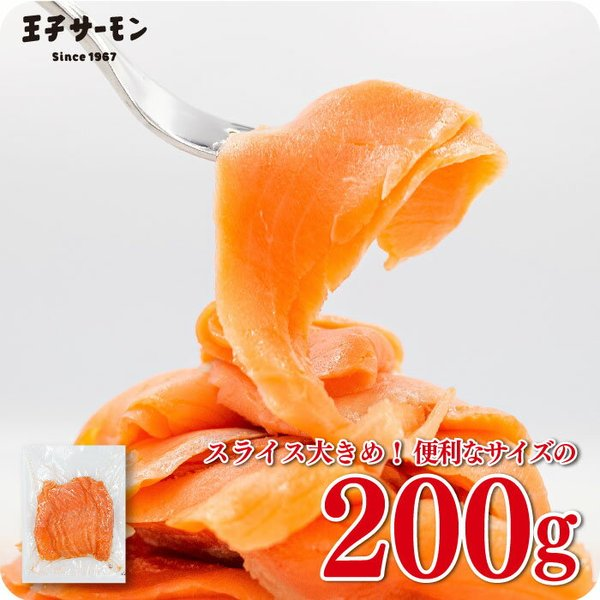

【2026年・家飲みと年末年始】おつまみとミックスナッツ10選｜カリナッツ・小島屋・K&K缶つま・燻製チーズ・焼きホタテ貝ひも・カルパス・ビーフジャーキー・スモークサーモンを実売価格で比較
家飲みが物足りないのは、お酒よりつまみの組み立ての問題です。ナッツだけ、スナックだけでは、途中で飽きてしまいます。
選ぶ軸は3つです。「まず日持ち」。常温で置けるナッツ、缶詰、ジャーキーを軸にすると、買い出しの回数が減ります。「次に食感の組み合わせ」。カリッとしたナッツ、噛みごたえのある貝ひもやジャーキー、やわらかいスモークサーモンを混ぜると、最後まで箸が進みます。「最後に味の濃さ」。塩気の強いものばかりだと飲みすぎるので、無塩のナッツや砂糖不使用のドライフルーツを1つ入れておくと、全体のバランスが取れます。
本記事では、楽天市場で人気・高評価の家飲みおつまみとナッツ10選を、実売価格とレビュー評価つきで写真付き紹介します。
- おすすめ10選 スペック・特徴比較表
- BEST 1｜3種ミックスナッツ 850g〜1kg
- BEST 2｜素焼きくるみ 500g
- BEST 3｜ななつのしあわせドライフルーツミックス 250g
- BEST 4｜缶つま スモークセット 6缶
- BEST 5｜手作りスモークチーズ ロング 360g
- BEST 6｜国産 焼きホタテ貝ひも 300g
- BEST 7｜亀田の柿の種 63g×24袋
- BEST 8｜おやつカルパス 30個
- BEST 9｜ビーフジャーキーチップス 30g×6袋
- BEST 10｜スモークサーモン スライス切り落とし 200g
- 【読者負担0円】買わなくても得する無料サービス
- まとめ：家飲みおつまみとナッツ10選の選び方
| 順位 | 商品名 | ブランド | 最大の特徴・おすすめ理由 | 総合評価 |
|---|---|---|---|---|
| BEST 1 | 3種ミックスナッツ 850g〜1kg | カリナッツ（Daily Nuts & Fruits） | 無塩・無添加で素材の味 | 4.61 |
| BEST 2 | 素焼きくるみ 500g | 小島屋 | 直火深煎りの香ばしさ | 4.72 |
| BEST 3 | ななつのしあわせドライフルーツミックス 250g | JONA | 7種類のドライフルーツ | 4.50 |
| BEST 4 | 缶つま スモークセット 6缶 | K&K（国分） | 6缶セットで食べ比べ | 4.45 |
| BEST 5 | 手作りスモークチーズ ロング 360g | ミツマル燻製所 | 手作りの燻製チーズ | 4.75 |
| BEST 6 | 国産 焼きホタテ貝ひも 300g | 前田家 | 噛むほど旨味が出る | 4.43 |
| BEST 7 | 亀田の柿の種 63g×24袋 | 亀田製菓 | 24袋の大容量 | 4.74 |
| BEST 8 | おやつカルパス 30個 | ヤガイ（扇屋食品） | 30個入りで配りやすい | 4.78 |
| BEST 9 | ビーフジャーキーチップス 30g×6袋 | テング | 6袋セット | 4.46 |
| BEST 10 | スモークサーモン スライス切り落とし 200g | 王子サーモン | 200gの業務用サイズ | 4.88 |
3種ミックスナッツ 850g〜1kg

カリナッツの3種ミックスナッツは、くるみ・アーモンド・カシューナッツを合わせた無塩タイプです。添加物と植物油を使っていないので、ナッツそのものの香ばしさが残っています。850gと1kgから選べ、家族で毎日つまむなら1kgが使いやすい。ジッパー付きの袋なので、開け閉めのたびに湿気る心配が少なく、最後までパリッとした食感が続きます。楽天市場での実売価格は約1,650円（2026年11月時点）。
- 無塩・無添加で素材の味
- 850gと1kgから選べる
- ジッパー付きで保存しやすい
- 開封後は酸化を防ぐため早めに食べ切る
素焼きくるみ 500g

小島屋は上野アメ横のナッツ専門店で、このくるみは直火で深煎りした素焼きタイプです。無添加・無塩・無油で、煎ることでくるみの甘みが引き出されています。カリフォルニア産のAクラスを使い、割れや欠けが少ないのが特徴。くるみはオメガ3の脂肪酸を含むので、お酒のおつまみだけでなく、サラダやヨーグルトのトッピングにも使えます。楽天市場での実売価格は約1,580円（2026年11月時点）。
- 直火深煎りの香ばしさ
- 無添加・無塩・無油
- サラダやヨーグルトにも
- 煎りたてのため、開封後は早めに食べ切る
ななつのしあわせドライフルーツミックス 250g

JONAのドライフルーツミックスは、いちじくやデーツなど7種類の果実を合わせたものです。有機オーガニック原料を100%使い、着色料・香料・添加物を使っていません。砂糖を加えていないので、果実そのものの甘さと酸味が残り、ワインやハイボールのつまみにも合います。250gの袋入りで、チャックを閉じて少しずつ食べられます。楽天市場での実売価格は約1,680円（2026年11月時点）。
- 7種類のドライフルーツ
- 有機原料100%
- 着色料・香料・添加物不使用
- 砂糖不使用のため、甘さはかなり控えめ
缶つま スモークセット 6缶

K&Kの缶つまは、国分が展開する缶詰のおつまみシリーズです。スモークセットは燻製にした6種類の缶詰の詰め合わせで、開けて皿に出すだけで一品になります。常温で保存できるので、急な来客や年末年始の買い出しの前に備えておけます。6缶あるので、家族で食べ比べても1回では終わりません。楽天市場での実売価格は約3,650円（2026年11月時点）。
- 6缶セットで食べ比べ
- 常温で備蓄できる
- 開けてすぐ出せる
- レビューは33件と少なく、3,650円と1缶あたりの単価は高め
手作りスモークチーズ ロング 360g

ミツマル燻製所のスモークチーズは、手作りで燻製したチーズをロングタイプに仕上げたものです。桜チップの香りがチーズに移り、そのまま切って食べるだけでワインにもビールにも合います。360gと食べごたえがあり、少しずつ切り分けて長く楽しめます。手作りのため出荷数に限りがあり、次回出荷は11月28日予定です。楽天市場での実売価格は約2,688円（2026年11月時点）。
- 手作りの燻製チーズ
- ワインにもビールにも合う
- 360gの食べごたえ
- レビューは16件と少なく、次回出荷が11月28日予定
国産 焼きホタテ貝ひも 300g

前田家の焼きホタテ貝ひもは、北海道産ホタテの貝ひもを焼き上げた珍味です。噛むほどに旨味が出て、ビールや日本酒のつまみにぴったり。個包装になっているので、食べる分だけ出せて、残りを乾燥させずに保管できます。300gのお徳用で、家族で長くつまめる量です。楽天市場での実売価格は約1,000円（2026年11月時点）。
- 噛むほど旨味が出る
- 個包装で出しやすい
- 300gのお徳用
- 乾燥系なので、密閉して冷蔵庫の匂いが移らないようにする
亀田の柿の種 63g×24袋

亀田の柿の種は、醤油味の小さなせんべいとピーナッツを合わせた定番のおつまみです。63gの個包装が24袋入りで、家飲みはもちろん、来客時の取り分けや配り用にも使えます。ピリッとした辛さと醤油の香ばしさで、ビールにも日本酒にも合います。保存がきくので、ストックしておくと重宝します。楽天市場での実売価格は約2,470円（2026年11月時点）。
- 24袋の大容量
- 個包装で配りやすい
- 定番の醤油味
- レビューは19件と少なく、個包装のためゴミは出る
おやつカルパス 30個

ヤガイのおやつカルパスは、スモークしたソフトタイプのカルパスです。1個ずつ個包装になっていて、30個入り。常温で保存でき、開けてすぐ食べられるので、家飲みのつまみにも、子どものおやつにも使えます。414円と手頃な価格で、まとめ買いしても気軽。噛みごたえがあり、ビールのあてにちょうどいい塩気です。楽天市場での実売価格は約414円（2026年11月時点）。
- 30個入りで配りやすい
- 常温で保存できる
- 414円と手頃
- 1個が小さいので、食べ過ぎやすい
ビーフジャーキーチップス 30g×6袋

テングのビーフジャーキーチップスは、牛肉を薄くスライスしてチップス状に仕上げたジャーキーです。30gの袋が6袋入りで、レギュラーとホットの味を選べます。噛むほどに牛肉の旨味が出て、ビールやハイボールのつまみに合います。袋のまま出せるので、家飲みのときに皿を洗う手間もありません。楽天市場での実売価格は約2,430円（2026年11月時点）。
- 6袋セット
- レギュラーとホットの食べ比べ
- 袋のまま出せる
- チップス状なので、1袋あたりの量はやや少なめ
スモークサーモン スライス切り落とし 200g

王子サーモンのスモークサーモンは、業務用仕様のスライス切り落とし200gです。燻製の香りと塩気がしっかりあり、そのまま食べても、サラダやカルパッチョにしても使えます。切り落としなので形は不揃いですが、1枚が薄く食べやすい。冷蔵庫に1パックあると、急な来客の前菜としても出せます。楽天市場での実売価格は約2,119円（2026年11月時点）。
- 200gの業務用サイズ
- 切り落としで使いやすい
- サラダ・カルパッチョにも
- 開封後は早めに食べ切る
この記事の商品を買う前に、まずは無料で得する選択肢をチェック。どれも登録・利用は0円で、無料期間中に解約すれば料金はかかりません。読みたい雑誌がある人、ポイントを貯めたい人、アンケートなら気軽という人、それぞれに合うものを選べます。
初回31日無料・無料期間中に解約すれば0円 → 楽天ポイントモール｜登録無料で毎日ポイ活
買い物なしでもポイントが貯まる無料サービス → 楽天インサイト｜アンケートに答えてポイント
登録無料・すきま時間のアンケートで貯まる → 楽天カード｜年会費永年無料
新規発行・年会費ずっと0円 →
4つのサービスの違いと使い分けは「出費0円で得する！買わずにポイントが貯まる無料サービス厳選4選」でまとめています。
💡 まとめ：家飲みおつまみとナッツ10選の選び方
家飲みのおつまみは、常温で置けるものを3〜4種類そろえると、買い足しなしで1週間戦えます。軸になるのは、無塩で大容量のカリナッツのミックスナッツと、直火深煎りの小島屋のくるみ。味を変えたいときは、K&Kの缶つまやミツマル燻製所のスモークチーズ、前田家の焼きホタテ貝ひもを開けるだけ。噛みごたえを足すなら、ヤガイのカルパスとテングのビーフジャーキー、定番の亀田の柿の種です。冷蔵庫に1パック、王子サーモンのスモークサーモンがあると、急な来客の前菜にもなります。甘いものが欲しくなったら、JONAのドライフルーツを少しだけ。
楽天市場では「5と0のつく日」や「お買い物マラソン」などのキャンペーンに合わせて購入すると、ポイント還元が最大化してお得に手に入ります。ぜひチェックしてみてくださいね。